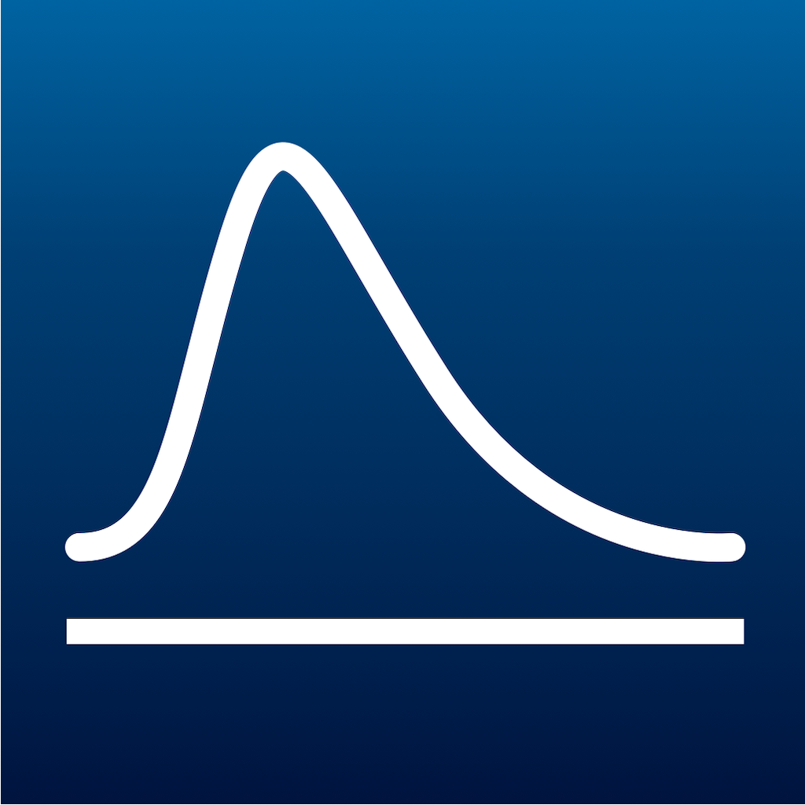

SpectroPlot
Version 1.10 · macOS · Intel and Apple silicon
SpectroPlot is a macOS application for viewing and comparing one-dimensional astronomical spectra, inspired by Tim Lester’s PlotSpectra application for Windows.
Spectral profiles can be displayed together or in separate tabs, normalised, and shifted along the wavelength and intensity axes. A velocity view provides a way to inspect line profiles relative to a reference wavelength.
The cursor shows wavelength at the selected position. Spectral features can be labelled using the included line database or custom wavelength markers and lists. FITS headers can be inspected in the sidebar.
Plot titles, axis labels, annotations and profile colours can be adjusted, and plots can be exported as PNG images.
1.5 MB download · DMG disk image
Signed and notarised by Apple.
System requirements
Requires macOS 15.6 or later. Universal application for Intel and Apple silicon Macs. Tested on macOS 26 and macOS 27.
Screenshots
Select an image to enlarge it.


Updates
Return to this page to download the latest version.